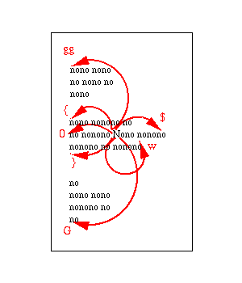

Ganhe tempo usando comandos precisos para movimentar o cursor e editar textos, dispensando o uso das setas do teclado, Delete e Backspace.
Editar textos é a tarefa mais comum de qualquer usuário de computador. Seja para responder um e-mail, criar um documento ou codificar um programa, lá estará o usuário digitando texto para a máquina. Embora faça isso diariamente, a grande maioria não faz um uso otimizado do seu editor de textos. Muito tempo é perdido em tarefas repetitivas e vícios de uso.
Este artigo é um guia para acabar com o sofrimento de pessoas viciadas em segurar teclas. Seja para movimentar o cursor ou para apagar grandes quantidades de texto, lá está o usuário estático segurando uma setinha ou a tecla Del por alguns preciosos segundos. Ao longo do dia esses segundos podem se tornar minutos, e ao longo dos meses, horas.
Evitando este desperdício de tempo, entra em cena o melhor editor de textos de todos os tempos: o Vim. Concebido numa época quando conexões remotas eram muito lentas, editar um texto tinha que envolver apertar o menor número de teclas possível. Hoje as conexões são rápidas, mas o conceito de "menos teclas, melhor" ajuda a poupar tempo na rotina diária de editar textos.
As setinhas são para perdedores
Quanto mais você usa as setas, mais tempo perde. Basicamente se usam as setas para movimentar o cursor no arquivo. Para ir ao meio da frase, o usuário fica segurando a seta até chegar no ponto desejado. Para ir ao início do parágrafo anterior, seta pra cima, depois seta para a esquerda. O Vim provê vários comandos que servem para dar "pulos" a outros pontos do arquivo, evitando gastar a ponta do seu dedo segurando a seta.
Seja na alteração de um texto já existente ou na composição de um novo, a edição nunca é linear. Editar um texto consiste em visitar diversas partes do documento, alterando e inserindo letras e palavras. Saber como chegar rapidamente a qualquer ponto do documento, apertando o menor número de teclas possível, é ser ágil e economiza tempo.
Os pulos mais conhecidos e que já possuem tecla especial no teclado são Home e End, que vão ao início e fim da linha e PgUp/PgDn que pulam páginas. O Vim possui comandos para pular a outras partes do arquivo, são eles:
| Comando | Ação |
|---|---|
| gg | Pula para a primeira linha |
| G | Pula para a última linha |
| :44 | Pula para a linha número 44 |
| { | Pula para o parágrafo anterior |
| } | Pula para o próximo parágrafo |
| ( | Pula para a frase anterior |
| ) | Pula para a próxima frase |
| 0 | Pula para o início da linha atual |
| $ | Pula para o fim da linha atual |
| `` | Desfaz o pulo, volta |
Estes são os pulos básicos que todo usuário do Vim deve saber. Com eles é possível "navegar" no documento de maneira rápida, independente de qual o seu conteúdo. Lembre-se que eles são válidos fora do modo de inserção (é preciso apertar <Esc> antes).
Se, por exemplo, lá no meio do texto você precisar voltar à primeira linha para checar uma frase, faz <Esc>gg e depois `` para voltar a editar o texto na posição original.
Assim como outros comandos do Vim, os pulos também podem ser quantificados. Basta adicionar um número na sua frente. Assim, o comando 5{ volta cinco parágrafos.
Além destes pulos para posições fixas, também é possível pular para uma posição qualquer onde esteja o texto desejado. Basta utilizar o o comando /, que procura adiante por um texto. Para ir até a próxima palavra "Linux", digite /Linux<ENTER>. Com o comando n (de Next), pula-se para as próximas ocorrências da mesma palavra. O N (maiúsculo) volta para a anterior.
Um atalho útil é o comando *, que procura a próxima ocorrência da palavra atual do cursor. Similar ao exemplo de pesquisa anterior, bastaria posicionar o cursor sob a palavra "Linux" e apertar o asterisco. Para uma busca mais confortável, basta colocar no ~/.vimrc a seguinte linha mágica set ic is hls scs.
Um outro pulo rápido e muito útil é o comando w (de Word), que pula para o início da próxima palavra. Apertar a tecla "w" três vezes faz o cursor avançar três palavras, e o comando 7w avançará sete palavras. O comando similar é o b (de Back), que pula para palavras anteriores.
E por último, o pulo mais avançado é o de procurar um caractere na mesma linha, com o comando f (de Find). Por exemplo, para ir para a próxima vírgula, o comando é f, e para a vírgula anterior (à esquerda) é F,. A diferença é o comando em maiúscula ou minúscula. O comando 3fa pulará para a terceira letra "a" após o cursor, na mesma linha.
Para ilustrar estes pulos, uma figurinha. Com o cursor sempre sob a letra N, são citados alguns comandos e as setas indicam para onde o cursor pulará.

Pulando rapidamente para a posição certa, o próximo passo é fazer a alteração necessária no texto. Nessa hora o Vim também é imbatível.
A tecla Del é para perdedores
Ficar segurando a tecla Del até apagar o trecho desejado é demorado e impreciso, freqüentemente apagando mais do que o desejado. O Vim provê meios de apagar grandes quantidades de texto apertando somente duas ou três teclas.
O comando x apaga caracteres à direita do cursor. Se for preciso apagar 20 caracteres, em vez de ficar segurando a tecla "Del" alguns segundos, basta digitar o comando 20x.
O comando d (de Delete) apaga caracteres ou linhas, dependendo de como é utilizado. Apertando dd apaga-se a linha toda. Já 5dd apaga as próximas cinco linhas. O comando D maiúsculo, apaga do cursor até o final da linha.
Mas a brincadeira de apagar começa a ficar divertida ao combinar o comando delete com os pulos já vistos. Basta usar a forma d<pulo>.
| Comando | Ação |
|---|---|
| dgg | Apaga até o início do arquivo |
| d0 | Apaga até o início da linha atual |
| dw | Apaga a palavra |
| d4b | Apaga as quatro palavras anteriores |
| df. | Apaga até o próximo ponto |
| d) | Apaga até o fim da frase |
O comando apagará todo o texto desde a posição do cursor até o destino do pulo. Acostume a sempre "falar" o comando, para ficar mais fácil memorizá-lo. Por exemplo, o df. é "Delete Find Ponto", ou seja "Apague até Encontrar um Ponto".
O comando d permanece no modo de comandos após apagar o texto. Caso o usuário queira acrescentar algum texto no lugar do antigo, primeiro será necessário entrar no modo de inserção (comando i). Para economizar esse passo, existe o comando c (de Change), que é idêntico do d, com a diferença de retornar automaticamente ao modo de inserção.
Uma maneira rápida de trocar a palavra "UNIX" por "Linux" é posicionar o cursor na letra "U" e digitar cwLinux. Este comando se lê "Change Word Linux".
Às vezes, não são grandes quantidades, mas alterações de um caractere que precisam ser feitas. Até nessa hora o Vim ajuda. Use o comando r (de Replace) para trocar um caractere por outro, sem precisar entrar no modo de inserção. Por exemplo, na palavra "Lenux", posicione o cursor na letra "e" e aperte ri.
Cada texto removido com os comandos x, d, c e r, é automaticamente copiado, e pode ser colado em outra parte do arquivo com o comando p (de Paste). Então a operação de mover texto no arquivo envolve apagá-lo, pular para a posição nova e colar.
Outro comando muito frequente de utilizar é o xp, que apaga um caractere e o cola uma posição à direita. Para corrigir a palavra "Liunx", basta posicionar o cursor na letra "u" e apertar xp. Parece bobo, mas é muito comum encontrar erros desse tipo em textos, onde duas letras estão com a posição trocada.
Para finalizar, uma tarefa corriqueira que é apagar trechos grandes de um arquivo, como "todas as linhas daqui até o início do arquivo" ou "todas daqui até o fim". Um verdadeiro pesadelo para os seguradores de teclas; já imaginou ficar segurando o Del ou o BackSpace durante minutos num arquivo grande?
Em alguns editores, pode-se usar o mouse para selecionar texto. Com um pouco de paciência e persistência, em alguns segundos consegue-se selecionar todo o texto e apertar Del. Outros mais espertos podem usar o teclado segurando o Shift para selecionar e apertar Ctrl+End para espichar a seleção até o fim do arquivo, e finalmente apertar a tecla Del. No Vim, basta um simples dG para apagar até o fim e um dgg para apagar até o começo. Mais prático impossível.
Todos estes comandos poupam tempo e têm precisão, mas seu uso deve ser forçado, pois é muito difícil abandonar o vício de segurar teclas. Depois de memorizar estes comandos e se disciplinar a usá-los, você não terá mais paciência de usar "outros editores" que lhe fazem perder segundos preciosos.
Artigo originalmente publicado na Revista do Linux edição 49 (a última), de janeiro de 2004.
Atualização em 2018-11-17: Depois que você dominar todos estes pulos, passe para o próximo nível e aprenda a pular usando Text Objects.